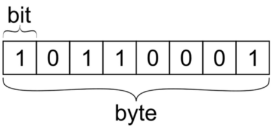

디지털 언어
모스부호
비트
컴퓨터진법
진법
아스키코드
유니코드
비트 (Binary Digit, bit)
정보라고 취급할 수 있는 가공된 디지털 데이터(자료)들을 나타내는 최하위 단위
컴퓨터 용량이나 프로그램 처리 능력의 최소 단위
하나의 비트는 0이나 1의 값을 가짐
여러 개의 bit를 조합해서 더 큰 데이터 단위를 표현할 수 있음
8개의 bit = 1 바이트(byte)
